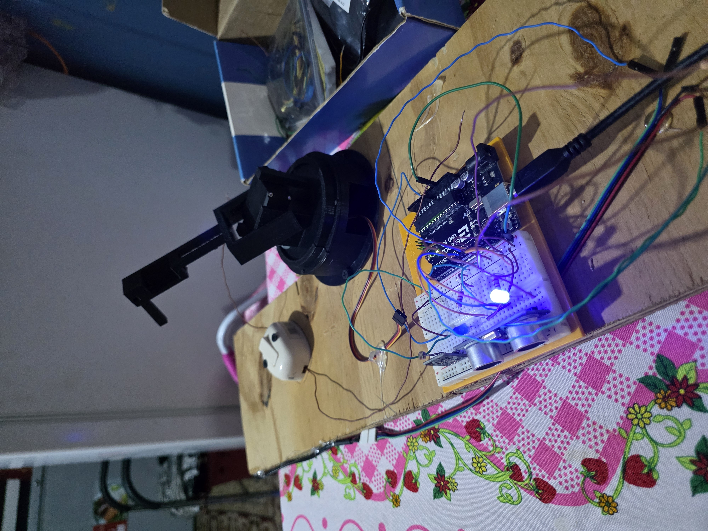
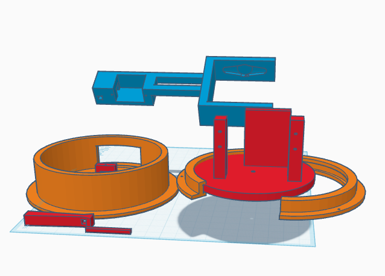
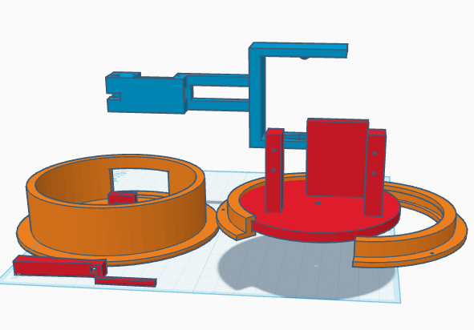
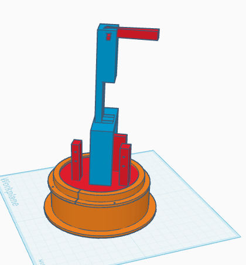
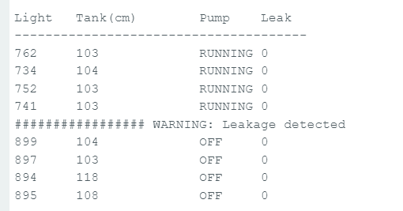
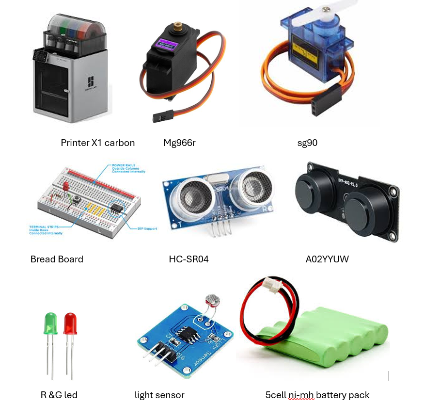
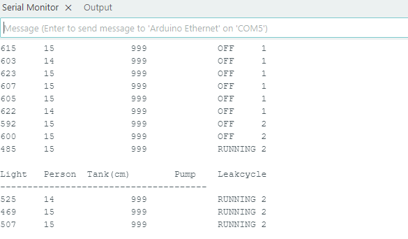

Room Control Robot Arm
This project demonstrates an automated environmental control system that combines sensors and a robotic arm to manage lighting and water supply inside a room. The system was designed in Tinkercad and implemented using an Arduino Uno, multiple sensors, and 3D printed parts using Bambulab printer with ASA filament .
The robot arm rotates along the Z-axis approximately 180° in order to flip a mechanical switch that activates a water pump. The system also monitors room activity using distance and light sensors to automatically control lighting.

Mechanical Design
The robotic arm was designed in Tinkercad and later 3D printed using a BambuLab printer. The arm rotates along the Z-axis using a base servo motor SG90. A second servo MG966r controls the arm movement that physically flip a switch that activates the water pump: The on positon is aproximately at 60° and the off at 50° relative to the starting postion of the base. In both cases the are would need to move 70° downwards to flip on or off the switch




Hardware Components
To replicate this project you would the devices listed bleow| Item # | Item | Purpose |
|---|---|---|
| 1 | 3D Printer | Used to print the components designed for the robotic arm. |
| 2 | Arduino Uno | Interfaces with the sensors and actuators used in this project. |
| 3 | Breadboard | Allows multiple electronic components to be connected to a single power source without soldering. |
| 4 | SG90 Servo (Base Rotation) | Controls the rotation of the base, allowing the arm to move between the ON and OFF positions of the pump switch. |
| 5 | MG996R Servo (Arm Movement) | Controls the movement of the arm and provides sufficient torque to flip the switch. |
| 6 | HC-SR04 Ultrasonic Sensor | Used to detect the proximity of a person. Although the sensor can measure up to 100 cm, a distance of 50 cm is used in testing to represent proximity. |
| 7 | A02YYUW Water Level Sensor | A waterproof sensor used to determine the water level in the tank, making it suitable for monitoring liquid levels. |
| 8 | Light Sensor (LDR) | Monitors the lighting conditions in the room to determine whether the light should be turned on when someone approaches. |
| 9 | Red LED Indicator | Indicates to the user that the water pump is currently running. |
| 10 | 5-cell Rechargeable Battery Pack (6V) | Provides independent power for the servos, since the power supplied by the Arduino is not sufficient for them to operate optimally. |

Sensor System
The system uses three sensors to monitor room conditions and water tank levels.
Light Sensor
Detects the brightness level in the room. When the room is dark and a person is detected nearby, the system automatically turns on the light and turns it off when these conditons are not met.
HC-SR04 Ultrasonic Sensor
Measures the distance of objects in front of the sensor. It is used to detect whether a person has entered the room. The test case distance threshold is approximately 100 cm.
A02YYUW Water Level Sensor
Used to detect the water level inside the tank. If the water level is low, the system activates the pump to refill the tank.
System Logic
The control logic is implemented on an Arduino Uno. The system continuously monitors room conditions and water tank status. I uses Serial. print to display a table format output to print sensor data at 10 seconds intevals
Lighting Logic
- If the room is dark
- AND a person approaches within 100cm
- Turn on the light
- When the person leaves the room, turn off the light
Water Pump Logic
- If tank level is low → activate robot arm
- Robot arm flips switch to start pump
- Pump runs for 1 minute
- If a leak is detected (distance does not increase)
- activate arm to shut off pump
- System waits 2 minutes and retries
Test Case
Both distance sensors were tested at a reference distance of 100 cm. The system was evaluated for pump activation, leak detection, and retry logic.
- Pump runtime: 1 minute
- Retry delay: 2 minutes
- Leak detection: no change in measured distance
- Retry counter: records number of failed fill attempts

Servo Motor Selection
Initially, two SG90 servo motors were used for the robot arm. However, the SG90 motor did not provide sufficient torque to flip the mechanical switch.
This caused the servo to stall and eventually burn out. To solve this issue, the arm servo was upgraded to an MG996R high-torque servo motor.
The final configuration used:
- SG90 – Base rotation
- MG996R – Arm actuation
Status Indicators
- left LED indicates the pump is currently running
- Arduino serial monitor prints the retry counter an al
- System logs number of failed attempts to fill the tank